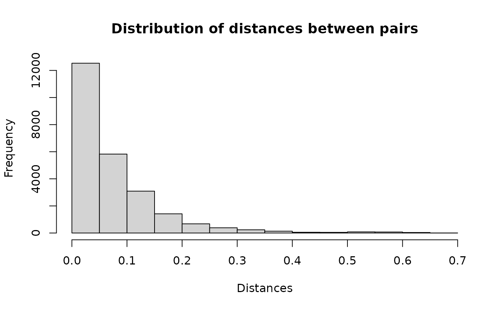

Setup
Read required packages
library(blocking)
library(reclin2)
#> Loading required package: data.table
library(data.table)
library(rnndescent)Data
Read the example data from the tutorial on the
reclin package on the URos 2021 Conference. The data
sets are from ESSnet on Data Integration as stated in the
repository:
These totally fictional data sets are supposed to have captured details of
persons up to the date 31 December 2011. Any years of birth captured as 2012
are therefore in error. Note that in the fictional Census data set, dates of
birth between 27 March 2011 and 31 December 2011 are not necessarily in error.
Census: A fictional data set to represent some observations from a
decennial Census
CIS: Fictional observations from Customer Information System, which is
combined administrative data from the tax and benefit systems
In the dataset census all records contain a person_id. For some of the records
in cis the person_id is also available. This information can be used to
evaluate the linkage (assuming these records from the cis are representable
all records in the cis).
census <- fread("https://raw.githubusercontent.com/djvanderlaan/tutorial-reclin-uros2021/main/data/census.csv")
cis <- fread("https://raw.githubusercontent.com/djvanderlaan/tutorial-reclin-uros2021/main/data/cis.csv")-
censusobject has 25343 rows and 9, -
cisobject has 25343 rows and 9.
Census data
head(census)
#> person_id pername1 pername2 sex dob_day dob_mon dob_year
#> <char> <char> <char> <char> <int> <int> <int>
#> 1: DE03US001001 COUIE PRICE M 1 6 1960
#> 2: DE03US001002 ABBIE PVICE F 9 11 1961
#> 3: DE03US001003 LACEY PRICE F 7 2 1999
#> 4: DE03US001004 SAMUEL PRICE M 13 4 1990
#> 5: DE03US001005 JOSEPH PRICE M 20 4 1986
#> 6: DE03US001006 JOSH PRICE M 14 2 1996
#> enumcap enumpc
#> <char> <char>
#> 1: 1 WINDSOR ROAD DE03US
#> 2: 1 WINDSOR ROAD DE03US
#> 3: 1 WINDSOR ROAD DE03US
#> 4: 1 WINDSOR ROAD DE03US
#> 5: 1 WINDSOR ROAD DE03US
#> 6: 1 WINDSOR ROAD DE03USCIS data
head(cis)
#> person_id pername1 pername2 sex dob_day dob_mon dob_year
#> <char> <char> <char> <char> <int> <int> <int>
#> 1: <NA> HAYDEN HALL M NA 1 NA
#> 2: <NA> SEREN ANDERSON F 1 1 NA
#> 3: <NA> LEWIS LEWIS M 1 1 NA
#> 4: <NA> HARRISON POSTER M 5 1 NA
#> 5: <NA> MUHAMMED WATSUN M 7 1 NA
#> 6: <NA> RHYS THOMPSON M 7 1 NA
#> enumcap enumpc
#> <char> <char>
#> 1: 91 CLARENCE ROAD PO827ER
#> 2: 24 CHURCH LANE LS992DB
#> 3: 53 CHURCH ROAD M432ZZ
#> 4: 19 HIGHFIELD ROAD SW75TG
#> 5: 17 VICTORIA STREET
#> 6: 1 SPRINGFIELD ROAD SW540RBWe need to create new columns that concatanates variables from
pername1 to enumpc. In the first step we
replace NAs with ''.
census[, ":="(dob_day=as.character(dob_day), dob_mon=as.character(dob_mon), dob_year=as.character(dob_year))]
cis[, ":="(dob_day=as.character(dob_day), dob_mon=as.character(dob_mon),dob_year=as.character(dob_year))]
census[is.na(dob_day), dob_day := ""]
census[is.na(dob_mon), dob_mon := ""]
census[is.na(dob_year), dob_year := ""]
cis[is.na(dob_day), dob_day := ""]
cis[is.na(dob_mon), dob_mon := ""]
cis[is.na(dob_year), dob_year := ""]
census[, txt:=paste0(pername1, pername2, sex, dob_day, dob_mon, dob_year, enumcap, enumpc)]
cis[, txt:=paste0(pername1, pername2, sex, dob_day, dob_mon, dob_year, enumcap, enumpc)]Linking datasets
Using basic functionalities of blocking package
The goal of this exercise is to link units from the CIS dataset to the CENSUS dataset.
set.seed(2024)
result1 <- blocking(x = census$txt, y = cis$txt, verbose = 1, n_threads = 8)
#> ===== creating tokens =====
#> ===== starting search (nnd, x, y: 25343, 24613, t: 1072) =====
#> ===== creating graph =====Distribution of distances for each pair.
hist(result1$result$dist, main = "Distribution of distances between pairs", xlab = "Distances")
Example pairs.
head(result1$result, n= 10)
#> x y block dist
#> <int> <int> <num> <num>
#> 1: 1 8152 8023 2.941167e-02
#> 2: 2 8584 8447 4.878050e-02
#> 3: 3 20590 19952 1.290381e-02
#> 4: 4 18456 17949 7.158583e-02
#> 5: 5 17257 16815 5.370837e-02
#> 6: 6 19868 19278 5.675775e-02
#> 7: 7 11183 10964 -1.192093e-07
#> 8: 10 9370 9213 8.233702e-02
#> 9: 11 7247 7144 4.881024e-02
#> 10: 12 10622 10424 2.777779e-02Let’s take a look at the first pair. Obviously there is a typo in the
pername1, but all the other variables are the same, so it
appears to be a match.
Assessing the quality
For some records, we have information about the correct linkage. We can use this information to evaluate our approach, but note that the information for evaluating quality is described in detail in the other vignette.
matches <- merge(x = census[, .(x=1:.N, person_id)],
y = cis[, .(y = 1:.N, person_id)],
by = "person_id")
matches[, block:=1:.N]
head(matches)
#> Key: <person_id>
#> person_id x y block
#> <char> <int> <int> <int>
#> 1: DE03US012003 20 21256 1
#> 2: DE03US015002 35 9524 2
#> 3: DE03US019002 44 6754 3
#> 4: DE03UT043001 81 17312 4
#> 5: DE125LU002001 98 12386 5
#> 6: DE125LU016001 126 11309 6So in our example we have 971 pairs.
set.seed(2024)
result2 <- blocking(x = census$txt, y = cis$txt, verbose = 1,
true_blocks = matches[, .(x, y, block)], n_threads = 8)
#> ===== creating tokens =====
#> ===== starting search (nnd, x, y: 25343, 24613, t: 1072) =====
#> ===== creating graph =====Let’s see how our approach handled this problem.
result2
#> ========================================================
#> Blocking based on the nnd method.
#> Number of blocks: 23789.
#> Number of columns used for blocking: 1072.
#> Reduction ratio: 1.0000.
#> ========================================================
#> Distribution of the size of the blocks:
#> 2 3 4 5
#> 22988 779 21 1
#> ========================================================
#> Evaluation metrics (standard):
#> recall precision fpr fnr accuracy specificity
#> 98.5582 98.5582 0.0007 1.4418 99.9986 99.9993It seems that the default parameters of the NND method result in an
FNR of 1.44%. We can see if increasing the number of k (and
thus max_candidates) as suggested in the Nearest
Neighbor Descent vignette will help.
set.seed(2024)
ann_control_pars <- controls_ann()
ann_control_pars$nnd$epsilon <- 0.2
result3 <- blocking(x = census$txt, y = cis$txt, verbose = 1,
true_blocks = matches[, .(x, y, block)], n_threads = 8,
control_ann = ann_control_pars)
#> ===== creating tokens =====
#> ===== starting search (nnd, x, y: 25343, 24613, t: 1072) =====
#> ===== creating graph =====Changing the epsilon search parameter from 0.1 to 0.2
decreased the FDR to 0.5%.
result3
#> ========================================================
#> Blocking based on the nnd method.
#> Number of blocks: 23948.
#> Number of columns used for blocking: 1072.
#> Reduction ratio: 1.0000.
#> ========================================================
#> Distribution of the size of the blocks:
#> 2 3 4 5
#> 23299 634 14 1
#> ========================================================
#> Evaluation metrics (standard):
#> recall precision fpr fnr accuracy specificity
#> 99.4851 99.4851 0.0003 0.5149 99.9995 99.9997Finally, compare the NND and HNSW algorithm for this example.
result4 <- blocking(x = census$txt, y = cis$txt, verbose = 1,
true_blocks = matches[, .(x, y, block)], n_threads = 8,
ann = "hnsw", seed = 2024)
#> ===== creating tokens =====
#> ===== starting search (hnsw, x, y: 25343, 24613, t: 1072) =====
#> ===== creating graph =====It seems that the HNSW algorithm performed better with 0.51% FNR.
result4
#> ========================================================
#> Blocking based on the hnsw method.
#> Number of blocks: 23994.
#> Number of columns used for blocking: 1072.
#> Reduction ratio: 1.0000.
#> ========================================================
#> Distribution of the size of the blocks:
#> 2 3 4 5
#> 23390 590 13 1
#> ========================================================
#> Evaluation metrics (standard):
#> recall precision fpr fnr accuracy specificity
#> 99.4851 99.4851 0.0003 0.5149 99.9995 99.9997